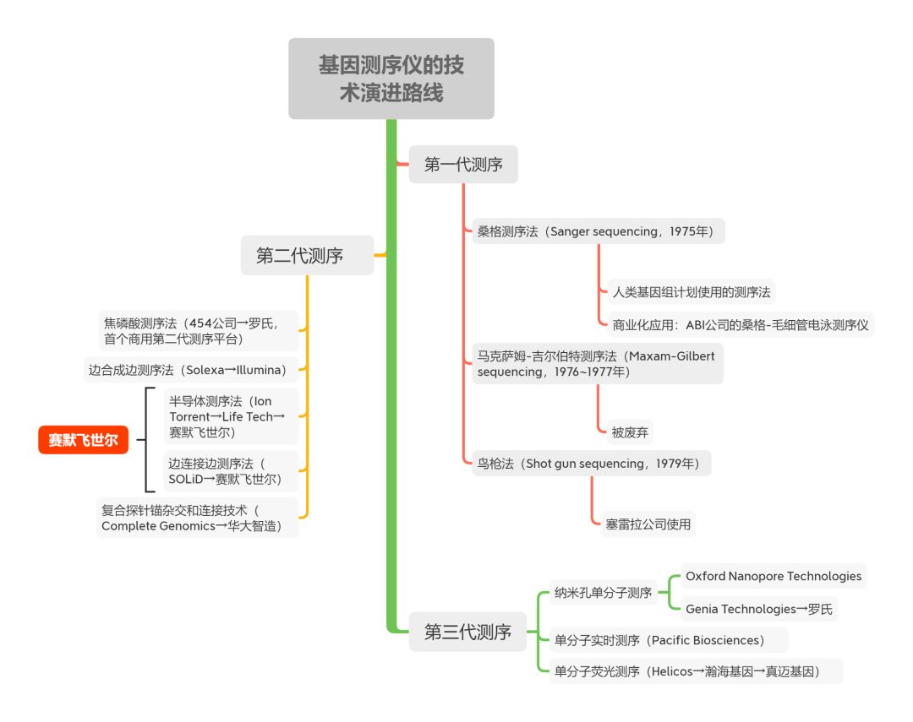
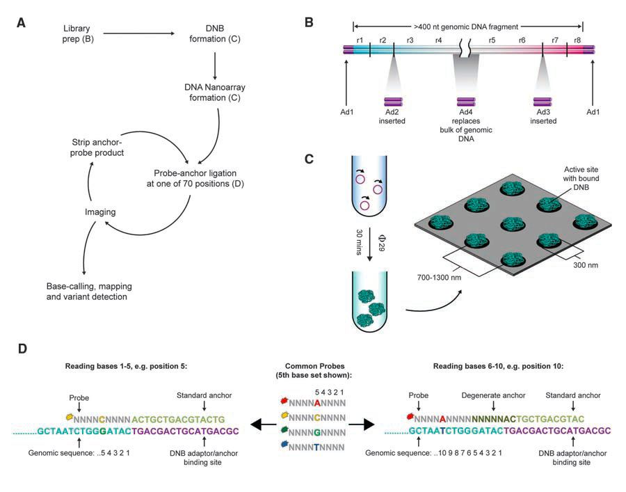
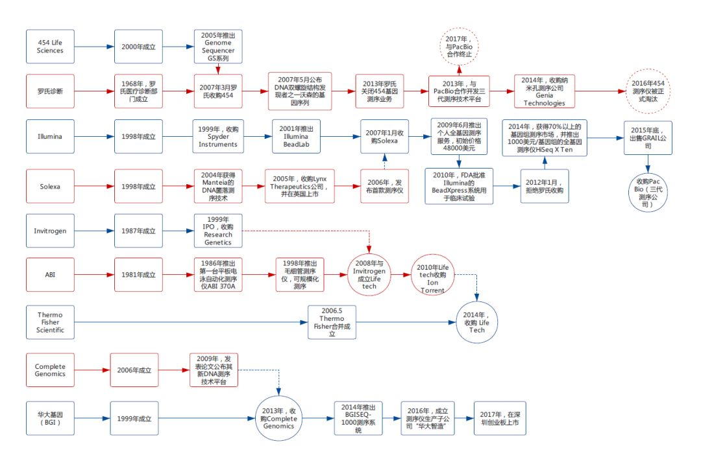
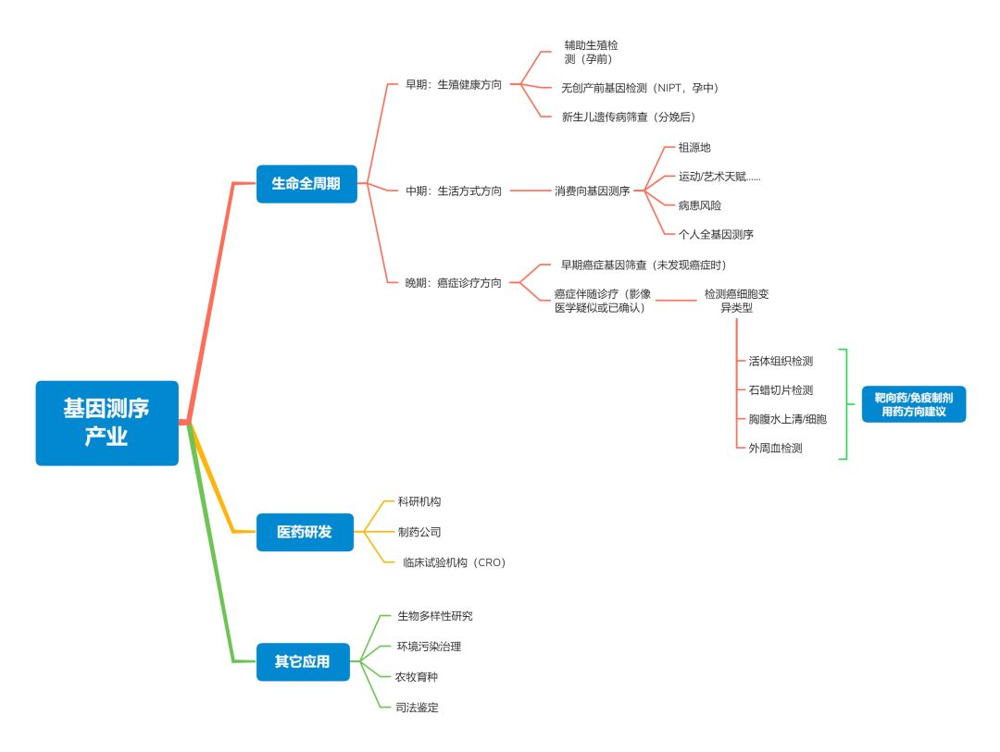

14天锁定新型肺炎元凶背后，是14年的技术竞赛
2002年12月，广东河源市一位黄姓病人因不明原因肺炎就诊，一个月后病愈出院，但引线已被点燃：中山市先后出现多起医护人员肺炎感染病例。2003年1月21日下午，国家疾病控制中心专家组将该病定名为“非典型性肺炎”。这种后来被称为SARS的呼吸系统传染病在中国广东爆发，继而向全国及东南亚乃至全球扩散。
世界卫生组织统计数据显示，截至2003年7月31日，SARS疫情共造成全世界8096人感染，死亡病例774人，其中中国大陆地区感染人数达到5327人[1]。
策划丨放大灯团队
作者丨李拓、张旌、刘冬宇
题图丨《流感》剧照
“错失的机会”
尽管中国大陆地区首先发现了感染病例，但确定病原体、对病毒进行分离、DNA测序和发现病毒受体的工作却并未走在世界前列。
实际上，北京一个研究机构（军事医学科学院，AMMS）在2003年3月7日之前，就已通过电镜，在病人身上获得的样本中观察到了一种未知病毒，并推测该病毒极有可能与当时流行的SARS有关，他们甚至发现，病人血清可能对抵抗病毒有帮助。
但由于官方使用了中国工程院院士、医学超微结构及病毒学专家洪涛的说法，宣称这场疫病的传染源是一种衣原体细菌，导致这个发现并未走出北京。2003年3月17日，世卫组织不得不组织世界上11家实验室（没有来自中国大陆的实验室）开始寻找SARS病原体。一周之后的3月24日，联合实验室发现了冠状病毒。
直到4月14日，病毒样本才被连夜送到华大基因实验室开始RNA测序，当天凌晨2点，测序结果出炉，但就科研竞赛而言，中国输了：来自加拿大温哥华的迈克尔・史密斯基因组科学中心（Michael Smith Genome Sciences Centre）已提前一天测定了这个新型冠状病毒的序列[2]。
2003年7月18日，Science杂志以《中国错失良机》（China’s Missed Chance）为题，报道了SARS病毒发现的过程和细节，并慨叹中国科学家“失去了一次在全世界面前闪耀的机会”[3]。
负责协调世卫组织的德国病毒学家克劳斯·斯托尔（Klaus Stöhr）不无遗憾地说，如果中国的科学家能及时公布发现，各国实验室的研究进度将大大加快。中国科学家哪怕是给斯托尔一封邮件，哪怕是一通电话，都可能让中国科学家在疾病史上占有一席之地，并在知名科研杂志上发表几篇重磅论文。军事科学院研究院杨瑞馥也懊悔地说：“我们等得太久，也太谨慎了。”[3]

2003年5月12日，国家邮政局宣布，将于19日特别发行《万众一心抗击非典》邮票一套一枚，编号为特4-2003，发行量为1250万枚，邮票面值80分
16年过去了，另一种冠状病毒袭来。
2019年12月30日，武汉市卫生健康委员会医政医管处发布《关于做好不明原因肺炎救治工作的紧急通知》，通知称武汉部分医疗机构陆续出现不明原因肺炎病人，临床表现均表现为病毒性肺炎或肺部感染。[4]
在首次疫情通报的一周之后，2020年1月9日，新华社记者采访病原检测结果初步评估专家组组长、中国工程院院士徐建国。他表示，截至7日21时，实验室从阳性病人样本中分离出一种新型冠状病毒，并进行了全基因组检测，并确认引起此次疫情的新型冠状病毒不同于包括SARS在内的已发现的人类冠状病毒。[5]
首例新型肺炎报告后的第14天，1月12日，世界卫生组织（WHO）宣布，已收到中国分享的从武汉不明原因病毒性肺炎病例中检测到的新型冠状病毒基因序列信息。世卫组织认为，这对其他国家开发特定诊断工具有重要意义。[6]
在基因序列公布后的1~2天里，硕世生物、达安基因、之江生物、华大基因等公司根据病毒的RNA序列，先后宣布完成了新型冠状病毒检测试剂盒的开发。[7]
1月19日，也就是本文发布的前一天，国家卫健委官方微信公众号“健康中国”发文，表示已下发新型冠状病毒检测试剂盒[8]。得益于检测手段的进步，在过去的两天内，武汉、北京、深圳各地确诊并通报了多起新型肺炎病例。
这次病原体检测，中国没有错失机会。在2003年至今的16年间，基因检测技术的发展，成了今天医疗工作者们迅速探明病原的关键工具。
是谁造出了这些基因检测设备？这是一个技术进步与市场竞争并行的故事。
无字天书
基因的复杂结构令人着迷，四种碱基两两配对，组成DNA双链螺旋结构，特定的碱基序列形成了生命的基因密码。通过破译DNA这部无字天书，我们才能了解世间万物和自身生、老、病、死的全部秘密。

RNA与DNA结构图，图源：Wikipedia
以人类为例，要测定多达60亿对碱基的完整序列，所需甚费。历史上，人们曾集合6个国家，20所大学/科研中心的科研团队，自1990年起，耗时13年，花费30亿美元才完成“人类基因组计划”（Human Genome Project, HGP）。
2003年4月，“人类基因组计划”宣布完成，但收尾工作陆陆续续持续到2005年。2006年，人们使用同样的技术制造出一款“基因测序仪”（由ABI公司生产），人类全基因组测序的成本直接降到了1000万~1500万美元[10]。
就在这款测序仪公布后的第二年，科学家们利用了另外一种新技术，再次为人类基因做全基因组测序，新项目只用了4个月，花费仅有近150万美元。
为了这次突飞猛进的技术进步，人们特意举办了一场发布会——2007年5月31日的发布会上，诺贝尔奖得主、DNA双螺旋结构的发现者之一詹姆斯·沃森接受了一份特殊的礼物：一张写有他个人全部DNA信息的DVD光盘——沃森，正是为这次新技术牛刀小试的血样提供者。
这张光盘所容纳的基因信息，全部由一家名为“454 Life Science”的公司来完成[11][12]。
**从13年到4个月，30亿美元到150万美元，效率和费用差距背后是技术的进步。
**
“人类基因组计划”使用的是第一代技术：桑格测序法（Sanger sequencing），而454公司则使用了第二代测序技术（基于“焦磷酸测序法”），省钱省力。
基因测序技术演进图，制图丨放大灯团队
桑格测序法由诺贝尔奖获得者桑格于1975年发明，原理并不复杂，主要是基于DNA由一块块颜色各异的积木（脱氧核糖核酸）组成，每块积木手拉手形成一条长链。桑格则在积木拼接过程中混入只有一只手的积木，长链就会在此中断，从而得知长链中每个位置分别是什么样的积木，也就是DNA的序列。[13]
省钱之余，454公司可谓一箭双雕。
由于沃森是DNA双螺旋结构的共同发现者，1967年诺贝尔生理或医学奖获得者，同时还是冷泉港实验室名誉主席，454公司充分利用了这个名人IP。一方面使用沃森的名字（James Dewey Watson），为项目取名“吉姆计划”（“Project Jim”），打通了商业与科研；另一方面，通过全基因组测序，让当事人沃森做其新技术背书，这是花多少公关与市场费用都难以达到的效果。
所以“吉姆计划”的本质，不过是454公司为新款测序仪产品做的技术秀。
诺奖得主参与的技术秀
早在2005年，454公司就有为个人“提供完整基因测序”的想法。
454公司创始人罗森伯格，这个兼具技术与商业思维的天才，为了让这场炒作更广为人知，首先想到的合作对象，就是DNA双螺旋结构发现者之一、诺奖获得者和时任冷泉港实验室名誉主席詹姆斯·沃森。
面对“首个为二代测序技术贡献完整基因组”的身份与名誉的双重诱惑，沃森没有拒绝，只是提出一个附加条件：不要公布他的某些遗传病基因。
可令454公司万万没想到的是，大嘴巴沃森“第二天就找《纽约时报》记者爆了料”[14]。
科技史插曲：一代测序技术竞争期间，“人类基因组计划”的完整基因由多个匿名人士拼齐，塞雷拉公司（Celera Genomics）的基因样品则来自其前总裁克雷格·文特尔（J. Craig Venter）捐献。
《纽约时报》记者闻风而动，赶到位于长岛的冷泉港实验室想一探究竟。但并没有什么神奇高端的科幻场景，作者看到了实验人员使用的454公司生产的旧款二代基因测序仪（GS 20），并用略显惊讶、同时又嫌弃的语气描述道：“像巨大的洗衣机和iPod的混合体，每台价值50万美元，还不包括软件平台”[10]。
但在2006年，这台怪兽机器还只能给大肠杆菌之类的微生物做基因测序，还不足以完成人类基因组测序[14]。人类基因组数据量太大了，这款早期二代测序仪可怜的处理能力会“消化不良”，导致吞吐量过小、错误率过高等问题。
也是在这一年，454的竞争对手Solexa推出了一款二代基因测序仪，并放言也要进行人类全基因测序，《纽约时报》甚至已曝出了基因样本的捐献者身份：一位尼日利亚匿名男子[10]。
出人意料的是，2006年还在争锋的454和Solexa，次年就双双委身于人——2007年1月，Solexa被生物科技公司Illumina（该公司在2019年终于有了个中文名字：因美纳）拿下，而454则在当年3月被巨头罗氏诊断收入囊中。
被罗氏收购后的454公司，使用其新款测序仪GS FLX，为沃森做了全基因测序，并在2007年5月为此举行了声势浩大的发布会——此时距离罗氏收购454公司刚过去两个月。
伴随DVD光盘发布会一起开启的，是一场历时十几年的测序仪之战。
因沃森而备受关注的454公司的明星测序仪GS FLX，是“高通量测序”或“下一代测序”（NextGeneration Sequencing，NGS）技术的早期代表，可同时对上万甚至百万条基因片段实现“大规模并行测序”，在提高效率和大大降低成本的同时，依旧能保证测序的精准度。
454的测序仪基于“焦磷酸测序法”，该法的原理于1996年提出[15]，是“非桑格测序法”的重要代表。简单地说，其原理本质是：先将单链DNA与各种酶共同孵化后，通过一系列酶化学反应，释放能量，促使荧光素的合成，并释放可见光。镜头和感光元件检测后通过捕捉光信号来确定互补链的序列信息。

454测序仪的测序流程，基于焦磷酸测序法。图源丨Wikipedia，by Density Design Research Lab
宿敌与新患
小而美的创新技术公司固然性感，但世界终究还是巨头们的。基因测序仪市场之争，陡然升级为Illumina和罗氏之间的技术对决。
测序技术的优劣，直接决定测序仪的市场成败。那么，决定测序技术的关键因素有哪些？
测序长度：即读长，以碱基对（base pair, bp）的数量为单位，通常情况下bp数字越大表明读长能力越好，即每次可以读取更长的碱基序列片段。桑格测序法虽然原始，但读长范围可达到800bp，以Illumina为代表的二代测序法读长则为50~300bp，454的读长可以达到700bp；
测序片段数量：单次测序片段数量越多越好。454的单次测序片段数量最多为100万，而Illumina的边合成边测序一次可测30亿片段。
测序速度：同等数量和精度情况下，测序速度当然越快越好；
测序成本：通常按每百万碱基对（Mbp）的成本来衡量，桑格测序法的成本为2400美元/Mbp，454公司将成本降至10美元/Mbp，而Illumina的测序成本则降至0.05美元/Mbp。
454公司嫁入豪门之后，一度备受荣宠。生意遍及全世界的罗氏，甚至还在生化灾难主题的好莱坞电影中，为454公司的测序仪做了广告植入。

《传染病》（Contagion，2011）剧照，454的测序仪曾在该片中露出
Illumina 测序仪的读长远不如454测序仪（300bp VS 700bp），但这条短板被单次测序数量（30亿 VS 100万）与成本（0.05美元/MbpVS 10美元/Mbp）补上了。这导致对手454极为被动：在被罗氏收购后，因产品价格过高，技不如人，导致节节败退。
Illumina测序仪原理：
第一步，将DNA切成300bp左右的片段，并用特有接头，将其首尾相连（即构建文库）；
第二步，通过扩增仪将每个待测片段复制成1000个左右的复制片段（即桥式扩增）；
第三步，加入四种荧光dNTP，分别标记四种碱基类型，发出不同的荧光，使用激光扫描荧光信号后得出碱基的类型和次序（即测序的核心过程）；
第四步，洗去dNTP的荧光基团，进入下一个测序反应。
有诺贝尔奖获得者沃森、首台第二代测序仪双重光环加持的454和巨头罗氏，最终沦为测序仪之战第一回合的输家。
454的失势令罗氏开始认真考虑后路，比如收购新公司。首要目标当然是市场风头正健的对手Illumina公司。
2011年12月13日，罗氏向SEC提交收购Illumina的申请，但收购谈判破裂。
2012年1月25日，罗氏在官网挂出了收购声明，还附上了给Illumina CEO的一封公开信。谈判细节由此得以大白于世[16]：
双方谈判已有数周之久。罗氏最初出价为每股44.5美元，总价57亿美元，全现金收购。相比市场传言那天的股价溢价高达64%（比过去三个月均价溢价43%）；
罗氏打算保留Illumina品牌与团队，甚至提出要把罗氏的应用科学业务与之合并，并将该业务部门总部迁至Illumina所在的加州圣迭戈；
虽然罗氏给出了优厚条件，但Illumina董事会对该交易兴趣缺缺。
溢价如此之高，傲娇的Illumina还是“一直不愿就此进行任何有意义的对话”，罗氏理所当然地认为，对方缺乏谈判诚意。于是做了一个更激进的决定：将聘请格林希尔事务所和花旗全球公司做财务顾问，立即展开敌意收购。罗氏甚至已经开始规划收购后的蓝图：
“鉴于贵公司董事会的反应，我们计划提名一批董事，并在Illumina的2012年年会上提出一些其他建议，供股东考虑。如果这些建议被采纳，将会产生由罗氏提名的人选，列席贵公司董事会的多数董事席位。”
在随后展开的敌意收购行动中，罗氏报价从每股44.5美元升至每股51美元，总价膨胀至67亿~68亿美元，但三个月后，敌意收购也被Illumina股东大会击退[17]。
Illumina今天或许会庆幸当年拒绝收购：截至2020年1月20日，Illumia的总市值已达到447亿美元——大约是当年的收购报价的七倍。
罗氏原本寄希望于Illumina的董事会成员会在自己的压力下发生变动，但事与愿违，2012年4月，罗氏宣布，鉴于Illumina董事可能在股东大会上连任，所以放弃收购。消息一出，罗氏股价上涨，而Illumina股价下跌。
首家二代基因测序仪公司454未能占领市场，加上收购Illumina未果，罗氏在二代测序仪市场接连受挫。
事已至此，还有谁能对抗Illumina？可能还得454公司……的创始人出马。
被罗氏收购后，454公司创始人乔纳森·罗森伯格出走，并成立了一家新的基因测序仪公司Ion Torrent，从一家名为DNA Electronic公司取得授权，于2010年推出世界上第一台半导体测序仪。
Ion的基因测序仪是基于流体、微体系机械和半导体组合而成，其工作原理是：先将DNA链固定在半导体芯片的微孔，然后依次加入碱基，在每个碱基加入时，仪器释放氢离子，使碱基在穿过微孔时被芯片检测到其类型和次序。该技术基于半导体芯片技术检测pH值，无需激光、照相机和荧光标记，故测序仪成本较低。
你大概可以将这类测序仪理解成一台安检门，能根据四种不同人的体型发出不同的“声音”，人经过该门时，后台可以通过“声调”的高低和次序来依次记录其类型，实现测序目的。
2010年，Ion作价7.2亿美元卖身Life Tech，后者由Invitrogen和ABI公司合并而成（有趣的是，ABI就是生产第一代测序仪的公司）；4年后，Life Tech也以136亿美元卖身科学仪器制造商赛默飞世尔（Thermo Fisher Scientific），后者由此集合三家测序技术于一身，一跃成为第二大基因测序仪生产商。
2010年，Illumina 测序仪在全球市场依旧能占到70%的绝对优势，其最大客户一度是一家名为“华大基因”的中国公司，后者在当年曾一口气从Illumina手中买下128台测序仪。而华大也一举成为了全球最大的基因组学研究机构，当年的营收是前一年的3倍多，突破10亿。
但这段蜜月期很短。
中国选手
2011年之前，无论罗氏、赛默飞世尔和Illumina的竞争再激烈，中国人也只能作壁上观，但事情很快发生了变化。
2011~2013年间，Illumina 单方面要求测序仪配套试剂提价，大大挤压了华大原有的利润空间；而对这个最大的中国客户的设备维修服务需求，Illumina 面也是消极应对，让华大方面有“卡脖子”的感觉。[18]
2013年1月，Illumina以3.5亿美元（另有2015年之前付1亿美元的里程碑款项）收购Verinata Health公司，后者主要业务是“无创基因产前检测”（NIPT），是华大基因的直接竞争对手。
自建测序平台迫在眉睫。
类似2018年“中兴事件”，基因测序产业也被上游高精尖技术（测序仪、测序试剂、耗材和软件等）外国企业把持。但想拥有自主测序平台，不单单需要分子生物学、机械、电子等技术，还需要化学、物理、信息软件等学科的力量，这其中门槛之高，投入资金之多和人力之众，绝非短短数年所能蹴就。
收购是唯一的捷径。
2012年，Illumina的直接竞争对手Complete Genomics（CG公司）正在寻求出售。作为一家上市公司，CG因业务不稳定、收入过少，导致其财务状况日益堪忧，股价从巅峰时期的近18美元跌至8美元左右，到2012年9月，股价已经在3美元上下徘徊。
尽管华大基因和Illumina都在寻求收购CG，但Illumina软硬兼施，一方面提出收购，另一方面又起诉CG侵犯其测序专利（Illumina 早在2010年就曾起诉 CG ，称CG侵犯其数项专利。（ US Patent No.6,306,597; No. 7,232,656; No. 7,598,035）2012年，为阻止对手收购 CG，Illumina再次起诉CG，认为其联合探针锚定聚合技术实际上侵犯了自家的另一项专利（US Patent No. 8,192,930））。
2013年3月，华大基因完成了从Illumina最大的客户到竞争对手的突变——以1.176亿美元的总价（每股出价仅比Ilumina高0.05美元[19]），收购了CG公司，成为Illumina的直接竞争对手。
CG 的测序仪原理与 Illumina 的略有不同。[20]
首先是在构建文库方面，CG更精准。普通的链式扩增反应虽然可以达到指数级的快速增多，但是扩增中出现的错误也会累积增多；而 CG 使用的滚环扩增技术（RCA），就像从卷纸抽出纸一样，随着卷轴的转动，始终以最开始的母链作为模版，降低了扩增过程中可能出现的错误积累。滚环式扩增得到的产物也像卷纸一样，会形成一条长的 DNA 链。
随后，这条长长的 DNA 链会像你放进背包的耳机线一般，卷成一个 DNA 纳米球（DNB）。在扩增过程中加在 DNA 链上的一些片段会像“磁铁”一样，让 DNA 纳米球被特有的规则矩阵芯片所吸引并固定，利于带有荧光的分子探针扫描，并与之结合，发出光信号，再经数字化处理后即可获得待测序列。

华大智造测序仪原理示意图[21]
Illumina法务使出浑身解数，也仍未能阻止这场决定华大命运的收购。双方由此交恶，Illumina将测序周边产品大幅提价，华大则开始投入重金进行测序仪研发。
又一场追逐战开始了。
2016年，华大基因剥离测序仪制造业务，成立华大智造。华大智造在回复“放大灯”（ID：guokr233）采访时称，到2019年11月，基因测序仪的销量为1300台，在海外，包括英国Sanger研究所、日本理化研究所、瑞典卡洛林斯卡医学院转化微生物组研究中心（CTMR）等，都是华大智造的客户。
Illumina 当然不能容忍新的竞争对手出现，尤其它还曾是自己的大客户。在2019年4月、5月和6月，Illumina 挥舞“专利诉讼”大棒，先后起诉华大在德国、丹麦、瑞士和土耳其的子公司，指控它们侵犯自家专利组合（EP. 3,002,589 B1; EP 1,530,578 B1; EP 1,828,412 B1; EP 3,002,289 B1），甚至还控告华大在其测序仪上使用的 MGISEQ 商标侵犯了 Illumina 注册的 MISEQ 名称的欧盟商标（第8972127号，仅一字之差）。[22]
另外，Illumina还开始翻旧账，2019年6月在美国北加州地区起诉华大智造，称其收购的 CG 侵犯其边合成边测序技术相关专利（US Patents No.7,566,537; No. 9,410,200） 。[23]
华大也予以反击。2019年5月和9月，华大智造在美国北加州地区和特拉华地区对 Illumina 提起诉讼，指控其侵犯了 CG 的两项专利。（US Patent No. 9,944,984; No.9,222,132）

华大智造和Illumina关于测序仪的专利纠纷 | 放大灯制图
2020年初，Illumina再次对华大提出诉讼，认为华大在英国和瑞典的子公司侵犯了其四项欧洲专利（EP 1530578 B1; EP 3002289 B1; EP 1828412 B2; EP 2021415 B1）。[24]
华大与Illumina的故事未完待续。
天书的新译者
到目前为止，世界上可完全独立制造第二代基因测序仪（NGS）的市场格局成型，前三分别是：Illumina、赛默飞世尔和华大智造。
至于Illumina曾经的“死对头”罗氏，则演了一出“没有永远的敌人”的故事，2020年1月，罗氏与Illumina达成了15年的非独家合作伙伴关系，拓宽NGS在肿瘤诊断领域的全球化应用，并开发和分销体外诊断检测方案。
总结起来，第二代基因测序仪市场格局演化路径如下：

整合制图丨放大灯团队
这不是终点，人们很快盯上了第三代测序技术。
2014年6月，罗氏诊断以3.5亿美元的价格（含2.25亿美元里程碑款项）收购测序仪研发公司Genia Technologies[25]，后者的核心卖点是第三代测序技术：“纳米孔测序”；
中国深圳的瀚海基因（其创始人贺建奎违规使用基因编辑技术引发争议，公司已更改法人代表并改名真迈基因）收购Helicos的单分子荧光测序测序技术（即SMS，不过该技术在国内争议较大）。
Illumina此前也曾艰难洽购第三代测序商Pacific Biosciences，但其一贯咄咄逼人的姿态引发同行警惕，被第三代测序仪公司Oxford Nanopore质疑和举报，认为该交易或导致垄断，导致交易陷入胶着。Illumina显然过于乐观，在2019年Q3财报中曾信誓旦旦地说，收购将在2019年底完成，但事实并未如愿：在美国联邦贸易委员会和英国竞争和市场管理局都拒绝批准这项高达12亿美元的收购交易[26]。
交易最终告吹，Illunima 霸业遇挫。
除了纳米孔测序技术外，第三代测序技术类型还包括SMS、SMRT、FRET等。后三种技术都会用到荧光染料，在此基础上识别碱基类型和次序。
这里重点介绍纳米孔测序技术原理：用酶将DNA分子一个个切下来，依次通过只能容纳单一核苷酸纳通过的纳米孔（Nanopore）中，穿过的瞬间会引发电流变化，以不同的电流强度确定不同的碱基类型和次序。

三代测序技术优劣对比，制表丨放大灯团队
测序仪不是科技公司的技术秀场，而是有着实实在在的用途。
技术的进步直接决定了分子生物学的诞生，而后者的日臻完善，又推动技术进一步商业化。
最初受益的是科研圈。在高通量的二代测序仪出现后，人们利用这些设备实现了对人的全基因DNA测序，以及对细菌、拟南芥、水稻的RNA测序（有哪些生物的全基因已被完整测序？可以参考GNN的梳理[27] )。除此之外，测序仪还可用于环保、农业等领域。十几年来，随着测序仪应用范围越来越广，基因测序技术快速商业化，已经逐渐形成了一条完整的产业链条。
- 产业上游是以Illumina、赛默飞世尔和华大智造为主体的测序仪制造商（还会卖与测序仪相配套的“试剂盒”，也正是因为测序仪厂商一度包圆了试剂盒生产，导致华大基因在向上游业务发展时，Illumina能通过提价相要挟）；

一款基因检测试剂盒的使用，图源：Illumina
你可以把它想象成一组试管，已经添加好每步反应所需的生物化学试剂。只需要在其中一个试管中注入样品，样品会由测序仪自动转移至各个试管内依次完成反应
中游则是以购买上游产品、在此基础上研制试剂盒、PCR扩增仪等周边设备进行测序的基因测序公司，这些公司要么开展to B的业务，与医院展开合作测序，要么开展to C业务，进行网络化营销，做几百上千元不等的基因测序服务。
下游则是消费级基因测序和临床诊疗市场。
最具诱惑力的市场是医疗健康产业。随着基因测序仪的不断精准化、小型化的升级换代，中游的基因测序公司和下游临床应用越来越多。到目前为止，基因医疗已实现了对人从生前到死后的全流程覆盖，包括产前无创DNA产前检测（NIPT）、个人基因组检测、肿瘤遗传基因检测、肿瘤早筛与实体瘤靶向基因检测。

以基因测序为核心的商业化模式探索，制图丨放大灯团队
围绕测序仪的科技战+商战，关乎核心技术、专利保护以及产业上下游的市场蛋糕，科技和商业不再两极分化，而是相辅相成。
地球生物的全部秘密，都写进了基因中。读这本“天书”的工具就是基因测序仪，它们是这部天书的翻译者，而这些争抢测序仪市场的公司们，是翻译者背后的大脑。谁掌握了翻译者，谁就掌握了整个行业发展的最源头，对人类科研、医疗的进步有着至关重要的作用。
更多更好的天书翻译者们，还在路上。
References：
[1] WHO: Summary ofprobable SARS cases with onset of illness from 1 November 2002 to 31 July 2003 https://www.who.int/csr/sars/country/table2004_04_21/en/[2] Offical Website :Canada’s Michael Smith Genome Sciences Centrehttps://www.bcgsc.ca/about-us/our-story[3] Enserink, M. (2003). SARS IN CHINA: China’s Missed Chance.Science, 301(5631), 294–296. doi:10.1126/science.301.5631.294[4] 武汉卫健委：武汉市卫健委关于当前我市肺炎疫情的情况通报 武汉市卫健委关于当前我市肺炎疫情的情况通报http://wjw.wuhan.gov.cn/front/web/showDetail/2019123108989及http://wjw.wuhan.gov.cn/front/web/showDetail/2020010309017[5] 新华网：专家称系新型冠状病毒 武汉不明原因的病毒性肺炎疫情病原学鉴定取得初步进展http://www.xinhuanet.com/2020-01/09/c_1125438971.htm[6] WHO：Novel Coronavirus – China https://www.who.int/csr/don/12-january-2020-novel-coronavirus-china/en/[7] “体外诊断网”：WHO命名新冠状病毒第二天，圣湘、硕世、达安、之江快速推出检测产品 https://mp.weixin.qq.com/s/sw_CmYzosKGWV75zgBXLBQ[8] 国家卫健委官方微信公众号“健康中国”：国家卫生健康委积极开展新型冠状病毒感染的肺炎疫情防控工作 https://mp.weixin.qq.com/s/nOQh6Ksv0duik53ILZQ2oA[9] “八点健闻”：北京确诊新冠状病毒肺炎2例，广东1例，武汉新增136例 https://mp.weixin.qq.com/s/DLZrbphDXYL_Qd_PF4tJ0A[10] Nicholas Wade. TheQuest for the ＄1,000 Human Genome. NewYorkTimes.July,18,2006 (Page F00001). https://www.nytimes.com/2006/07/18/science/the-quest-for-the-1000-human-genome.html[11] Wheeler, D.,Srinivasan, M., Egholm, M. et al. Thecomplete genome of an individual by massively parallel DNA sequencing. Nature 452, 872–876 (2008) doi:10.1038/nature06884[12] Wadman, M. JamesWatson’s genome sequenced at high speed. Nature452, 788 (2008) doi:10.1038/452788b[13] Sanger, F., &Coulson, A. R. (1975). A rapid methodfor determining sequences in DNA byprimed synthesis with DNA polymerase. Journal of Molecular Biology, 94(3), 441–448. doi:10.1016⁄0022-2836(75)90213-2[14]BioITWorld.“Project Jim”: 454 Sequences James Watson’s DoubleHelix.Mar.23.2007( http://www.bio-itworld.com/newsitems/2007/march/03-23-07-watson/)[15] Ronaghi, M.,Karamohamed, S., Pettersson, B., Uhlén, M., & Nyrén, P. (1996). Real-Time DNA Sequencing Using Detection ofPyrophosphate Release. Analytical Biochemistry, 242(1), 84–89.doi:10.1006/abio.1996.0432[16] Offical website:Roche offers to acquire all outstanding shares of Illumina, Inc. to furtherstrengthen its leading role in diagnostics. 25,January,2012. https://www.roche.com/media/releases/med-cor-2012-01-25.htm[17] Michael J. de la Merced: Illumina Fends OffRoche’s Hostile Bid. NewYorkTimes. April 18, 2012 https://dealbook.nytimes.com/2012/04/18/illumina-fends-off-roches-hostile-bid/[18] 谷业凯：解码生命有了国产利器.人民日报.2019年05月27日 http://scitech.people.com.cn/n1/2019/0527/c1007-31103568.html[19] 林腾：基因测序的硬件往事.界面新闻 https://www.jiemian.com/article/3494132.html[20] Radoje et al., HumanGenome Sequencing Using Unchained Base Reads on Self-Assembling DNA Nanoarrays.1 Jan, 2010, VOL 327. DOI: 10.1126/science.1181498[21] Drmanac, R., Sparks,A. B., Callow, M. J., Halpern, A. L., Burns, N. L., Kermani, B. G., … Yeung, G.(2009). Human Genome Sequencing UsingUnchained Base Reads on Self-Assembling DNA Nanoarrays. Science, 327(5961),78–81. doi:10.1126/science.1181498[22] Illumina Files PatentInfringement Suit Against BGI Europe in Denmark. GenomeWEB. May 15, 2019. https://www.genomeweb.com/sequencing/illumina-files-patent-infringement-suit-against-bgi-europe-denmark#.XiFvIS2tZQI[23] Illumina Sues BGI,Affiliates Over Sequencing Patents in US, Switzerland, Turkey. GenomeWEB. Jun28, 2019. https://www.genomeweb.com/sequencing/illumina-sues-bgi-affiliates-over-sequencing-patents-us-switzerland-turkey#.XiFsYy2tZQI[24] RTTNews Staff Writer.llumina Files Patent Infringement Suits Against BGI In Sweden And U.S. RTTNews. 1/10/2020. https://www.rttnews.com/3058135/illumina-files-patent-infringement-suits-against-bgi-in-sweden-and-u-s.aspx[25] Reuters: Rocheacquires DNA sequencing firm for up to $350 million https://www.reuters.com/article/us-roche-hldg-genia/roche-acquires-dna-sequencing-firm-for-up-to-350-million-idUSKBN0ED0LV20140602[26] Illumina calls itquits after FTC blocks its $1.2B offer for PacBiohttps://www.fiercebiotech.com/medtech/illumina-calls-it-quits-after-ftc-blocks-its-1-2b-offer-for-pacbio
[27] GNN: A Quick Guide toSequenced Genomes http://www.genomenewsnetwork.org/resources/sequenced_genomes/genome_guide_p1.shtml
**
- 我们的文章，也许你会感兴趣 -**
《国民神药“醒脑静”》
《中国商人的失忆解药》
《无法保存的数据，正在消失的历史 | 严肃脸》
- 详细了解“放大灯”及招聘信息，请点这里 -